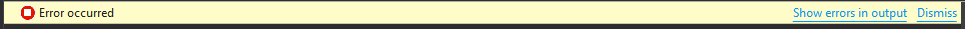

Create and configure a local NuGet server
20-08-2016This guide will work with three project, the Nuget Server project, the Nuget Package project that contains a simple library and a Sample project to use the package created.
Nuget Server project
1. Install the IIS server if you don't have it yet.
2. Create a new site, NugetServer for example, to host the server.
3. Configure the port 8080 if its free, or any other as you wish.
From Visual Studio:
1. Create an ASP.NET web project with the Empty template.
2. Install the Nuget.Server package.
Check the web.config and be sure that the targetFramework version from httpRuntime entry is the same that targetFramework from compilation entry
If you have more than once compilation entry then remove the different one.
To publish the project on IIS you need to run Visual Studio as Administrator;
Connection:
- Publish method: Web deploy
- Server: localhost (no port number)
- Site name: NugetServer (site name in IIS)
- Destination URL: http://localhost:8080 (site address)
Settings:
- Configuration: Release
- Expand File Publish Options and check Exclude file from the App_Data folder
Nuget Package project
In Visual Studio create a new Class Library project and add a simple method that returns whatever value in order to test it later in the Sample project.
Download Nuget.exe from https://www.nuget.org/downloads and run the next command where the .csproj is located in order to create the .nuspec file.
nuget.exe spec
If you have an error like
Unexpected token 'spec' in expression or statement. + CategoryInfo : ParserError: (:) [], ParentContainsErrorRecordException + FullyQualifiedErrorId : UnexpectedTokenTry to copy the nuget.exe to the same folder that .csproj file and run it from there.
Open the .nuspec file created and complete all information.
Build the project in Release mode and generate the nuget package with:
nuget.exe pack Project_name.csproj -Prop Configuration=Release
The previous command could fail if you don't fill correctly the .nuspec file.
Finally copy the .nupkg file created into the Packages folder of the NugetServer.
Sample project
Create a new Console App project and configure the Nuget repository.
Tools -> Nuget Package Manager -> Package Manager Settings -> Package Sources
Add a new one with this options:
Name: Local Server
Source: http://localhost:8080/nuget
Click on Update then Ok
If there is an error getting the list of packages from local server like the image below 
check the Output console to know more about the error.
[Local Server] The V2 feed at 'http://localhost:8080/Search()?$filter=IsLatestVersion&searchTerm=''&targetFramework='net47'&includePrerelease=false&$skip=0&$top=26&semVerLevel=2.0.0' returned an unexpected status code '500 Internal Server Error'.
In this case the error 500 means that the sever cannot server the packages and is related with the note in the Nuget Server project section.
Extra: Automatise the package creation
This is an alternative version of the Nuget Package project. Instead of create the package and copy it to the server manually, these tasks are performed by a script when you build the project.
Start in the same way creating the Class Library project and create a folder Tools in the solution folder then copy the nuget.exe file into it.
Create a Post-Build event with the content below to create the nuget package automatically and be moved to the Packages folder of the Nuget server
"$(SolutionDir)Tools\nuget.exe" pack "$(ProjectPath)" -Prop Configuration=Release
if exist "$(TargetDir)*.nupkg" (
move "$(TargetDir)*.nupkg" "D:\path_to_server\Packages"
)
If you don't see the new versions available that means the new nuget packages has not been generated.
You can check all versions available of the package in the Packages/package_name folder on Nuget Sever. If there is only one, means that something gone wrong.
If you are reusing the Nuget Package Sample project be sure to remove the .nuspec and .nupkg files from project folder because you don't needed now also remove the .nupkg file from the Nuget Server that you copied manually.
COMMENTS